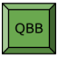
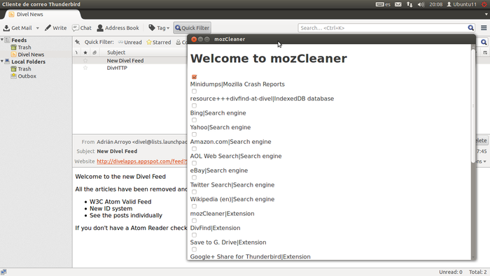
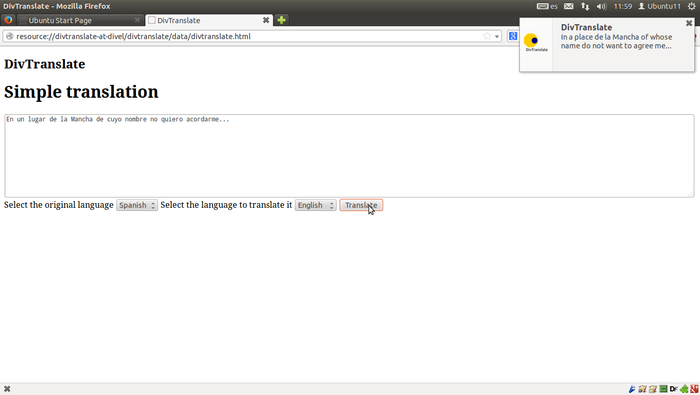
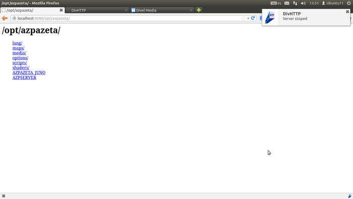

firefox-addons
See the reference manual for every addon
Google+ Share

Share on Google+the current URL. Click right and click "Share on Google+".
Do you want to share the current URL in Google+? With Google+ Share you can share the actual URL with the right click button and click to Share on Google+.
Avalible for: Firefox
Divel Notepad
Save your notes quickly and read it later
Divel Notepad is the best addon for taking notes. It's uses IndexedDB API for quick and safe storage operations.
Avalible for: Firefox and Fennec (unstable)
El Tiempo en España
Inform of the time in his city on Spain thanks to AEMET
How much temperature does today? I will have to take a look on Google? No, use El Tiempo en España
Avalible for: Firefox
Quick BananaBread
Instant access to the WebGL reference game: BananaBread
Ready for the action? With Quick BananaBread you can access directly to BananaBread, the best WebGL game at the moment.
Avalible for: Firefox
DivHTTP
A basic HTTP server that runs inside Firefox. Designed for web developres who are tired of do 'pyhton -m SimpleHTTPServer'
Open the Addon Bar widget for DivHTTP and "start serving HTTP".
Avalible for: Firefox
mozCleaner
Cleans your Firefox, Thunderbird, SeaMonkey, Fennec, BlueGriffon and Instantbird
Get more free space and more speed with mozCleaner. mozCleaner is a powerful tool that searchs in Mozilla Applications for files that can be securely deleted.
Avalible for: Firefox, Thunderbird, SeaMonkey, Fennec (unstable), Instantbird and BlueGriffon
DivTranslate
Translate the selected keywords and statements with the Apertium translate engine
Get more free space and more speed with mozCleaner. mozCleaner is a powerful tool that searchs in Mozilla Applications for files that can be securely deleted.
Avalible for: Firefox, Fennec
DivFind
Search in all your search engines at the same time
DivFind can search in thousands of search engines at the same time. There are 2 types of search engines avalible for DivFind:
-Firefox Native Search engines: The same searchs engines that are avalible in the Search Bar. Only avalible in Firefox Desktop
-DivFind search engines: Search engines manually configured inside the addon. Avalible in all platforms
Compatibility:
-Firefox can do searchs from context menu, widget and Hotkey with Native and DivFind search engines
-Fennec/Firefox for Android: Can do searchs in long clikcs with DivFind search engines
-Thunderbird: Can do searchs from context menus with DivFind search engines. EXPERIMENTAL
-SeaMonkey: Can do searchs from context menus with DivFind search engines. EXPERIMENTAL
Note that SeaMonkey and Thunderbird are under EXPERIMENTAL. This means that may work or not.
Avalible for: Firefox, Fennec, Thunderbird, SeaMonkey
Next Tuenti
NextTuenti adds extra funcionalities to the Tuenti Social Network
With NextTuenti you can personalize Tuenti colors, add HTML gadgets, notifications, share URLs, download photos and much more.
Avalible for: Firefox
DivMixer
Experiment with the art of the music
Experiment with the art of the music. Maybe you can use it as DJ. Based on https://github.com/cwilso/WebAudio
Avalible for: Firefox, Fennec, Thunderbird, SeaMonkey, Instantbird, BlueGriffon
Save to G. Drive
Save online files directly to Google Drive
Save your files directly to your Google Drive account. It only works on links under the same domain and with every type of file. You should right click under a link to a file.
Avalible for: Firefox, Fennec, Thunderbird, SeaMonkey
Screenshots
  How are they done the addons?
Some addons are made in XUL + chrome.manifest + install.rdf. Other addons are made with the Addon SDK and Bootstrapped APIs. Finally the search engines are OpenSearch Plugins
XYZ addons doesn't work on XYZ. How can I solve it?
The most powerful way to report this and solve questions is doing bugs on GitHub
What are the VCS and how can I use it?
VCS are tools for manage source code of programs. firefox-addons uses Git and is hosted on GitHub but you can take a look at this guide about how to use some VCS
You can donate via PayPal or BitCoin
1A2j8CwiFEhQ4Uycsjhr3gQPbJxFk1LRmM